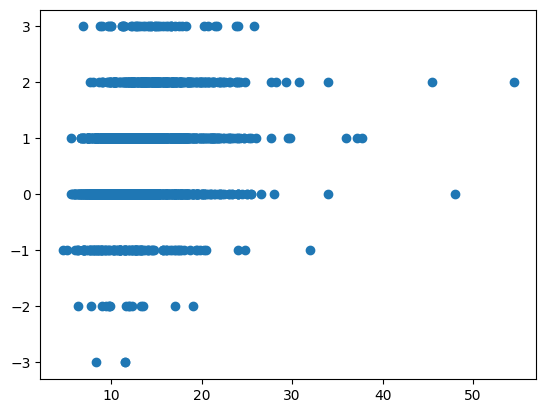
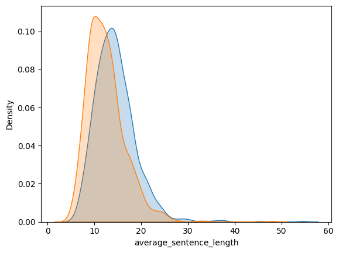

import numpy as np
import pandas as pd
import seaborn as sns
from sklearn.feature_extraction.text import TfidfVectorizer
from sklearn.metrics import classification_report
import warnings
warnings.filterwarnings('ignore')
df = pd.read_csv("data/ReviewsWithVotes.csv")
# fix votes nan to 0
df["votes"] = df["votes"].fillna(0)
# df["votes"] = df["votes"] - 1 # remove self votes
# # normalize votes
# df["votes"] = df["votes"] / df["votes"].max()
# high_quality_threshold = 0.45
# df["imputed_quality"] = (df["votes"] >= high_quality_threshold)*1
df["imputed_quality"] = (df["votes"] > 0) * 1 # sum of annotators votes > 1 ie (2 or 3)
# TODO: decide if this thereshold should be 0 or 1
# TODO: Setting threshold to 0 (1,2,3 annotators) greatly improves performance => we should annotate more!
# convert boolean cols to int
df["again"] = df["again"].astype(int)
df["instructorEnjoyed"] = df["instructorEnjoyed"].astype(int)
df["instructorAgain"] = df["instructorAgain"].astype(int)
def get_vectorizer(df, text_column):
"""
Vectorize the text column
"""
vect = TfidfVectorizer(
max_features=1000,
max_df=0.8,
min_df=0.1,
stop_words="english",
)
vect.fit_transform(df[text_column])
return vect
# Q: whats the latest date in the dataset?
print(df["reviewDate"].max())
# Q: how many reviews are there in the dataset?
print(len(df))2023-04-21 18:09:01.856+00
1925df["imputed_quality"].value_counts()1 1036
0 889
Name: imputed_quality, dtype: int64import matplotlib.pyplot as plt
# plt.hist(df["votes"], bins=6)
plt.scatter(df["instructorEnthusiasm"], df["votes"]) # these won't work
<matplotlib.collections.PathCollection at 0x1f688dc16f0>high_quality_df = df[df["imputed_quality"] == 1]
v = get_vectorizer(high_quality_df, "content")
X = v.transform(high_quality_df["content"])
print(v.get_feature_names_out())
bad_quality_df = df[df["votes"] < 0]
v_bad = get_vectorizer(bad_quality_df, "content")
X_bad = v_bad.transform(bad_quality_df["content"])
print(v_bad.get_feature_names_out())
['assignments' 'class' 'classes' 'content' 'course' 'definitely'
'difficult' 'discussion' 'easy' 'engaging' 'enjoyed' 'exams' 'extremely'
'final' 'fun' 'good' 'great' 'hard' 'homework' 'hours' 'interesting'
'just' 'learn' 'lectures' 'like' 'lot' 'material' 'overall' 'papers'
'pretty' 'prof' 'professor' 'reading' 'readings' 'really' 'recommend'
'semester' 'students' 'super' 'taking' 'teaching' 'think' 'time'
'understanding' 'week' 'work']
['boring' 'class' 'course' 'definitely' 'difficult' 'does' 'easy' 'exams'
'good' 'great' 'hard' 'homework' 'hours' 'interesting' 'just' 'lectures'
'like' 'lot' 'material' 'nice' 'pretty' 'professor' 'really' 'recommend'
'students' 'super' 'took' 'work']# y = df["imputed_quality"]
# x_df = pd.DataFrame(X.toarray(), columns=v.get_feature_names_out())
# # x_df["imputed_quality"] = labels
# from sklearn.model_selection import train_test_split
# X_train, X_test, y_train, y_test = train_test_split(x_df, y, test_size=0.15)
# from sklearn.linear_model import LogisticRegression
# lr = LogisticRegression(penalty="l2")
# lr.fit(X_train, y_train)
# y_pred = lr.predict(X_test)
# print(classification_report(y_test, y_pred))
sliders = [
"rating",
"difficulty",
"value",
"instructorEffectiveness",
"instructorAccommodationLevel",
"instructorEnthusiasm",
]
def get_default_slider_mse(row):
return np.mean((row[sliders] - 5)**2)
df["default_mse"] = df.apply(get_default_slider_mse, axis=1)def get_review_content_length(row):
return (len(row["content"]) - 200)/200
df["content_length"] = df.apply(get_review_content_length, axis=1)def review_content_larger_than_250(row):
return (len(row["content"]) > 250) * 1
df["content_larger_than_250"] = df.apply(review_content_larger_than_250, axis=1)# quality vs content_larger_than_250
# df["content_larger_than_250"].value_counts()
# df["imputed_quality"].value_counts()
df[df["content_larger_than_250"] == False]["imputed_quality"].value_counts()0 373
1 108
Name: imputed_quality, dtype: int64plt.figure()
plt.scatter(df["content_length"], df["votes"])
plt.show()def get_average_sentence_length(row):
return len(row["content"].split(" ")) / len(row["content"].split("."))
df["average_sentence_length"] = df.apply(get_average_sentence_length, axis=1)plt.figure()
plt.scatter(df["average_sentence_length"], df["votes"])
plt.show()
slider_cols = ["value", "difficulty", "rating", "instructorEffectiveness", "instructorEnthusiasm", "instructorAccommodationLevel"]
def get_variance(vals):
return np.var(vals)
columns = ["value", "difficulty", "rating", "again", "instructorEffectiveness", "instructorEnthusiasm", "instructorAccommodationLevel", "instructorEnjoyed", "instructorAgain"]
default_slider_vals = {
"value": 5,
"difficulty": 5,
"rating": 5,
"again": 0,
"instructorEffectiveness": 5,
"instructorEnthusiasm": 5,
"instructorAccommodationLevel": 5,
"instructorEnjoyed": 0,
"instructorAgain": 0
}
overly_negative_vals = {
"value": 1,
"difficulty": 10,
"rating": 1,
"again": 0,
"instructorEffectiveness": 1,
"instructorEnthusiasm": 1,
"instructorAccommodationLevel": 1,
"instructorEnjoyed": 0,
"instructorAgain": 0
}
overly_positive_vals = {
"value": 10,
"difficulty": 1,
"rating": 10,
"again": 1,
"instructorEffectiveness": 10,
"instructorEnthusiasm": 10,
"instructorAccommodationLevel": 10,
"instructorEnjoyed": 1,
"instructorAgain": 1
}
default_slider_vals_list = [default_slider_vals[col] for col in columns]
overly_negative_vals_list = [overly_negative_vals[col] for col in columns]
overly_positive_vals_list = [overly_positive_vals[col] for col in columns]
def get_mse(vals, expected_vals):
return np.mean(np.square(vals-expected_vals))df["default_mse"] = df[columns].apply(get_mse, axis=1, args=(default_slider_vals_list,))
df["overly_negative_mse"] = df[columns].apply(get_mse, axis=1, args=(overly_negative_vals_list,))
df["overly_positive_mse"] = df[columns].apply(get_mse, axis=1, args=(overly_positive_vals_list,))
df["slider_variance"] = df[slider_cols].apply(get_variance, axis=1)# readability
# from readability import flesch_reading_ease, smog_index, dale_chall_readability_score
from textstat.textstat import textstatistics
import math
flesch_reading_ease = lambda x: textstatistics().flesch_reading_ease(x)
smog_index = lambda x: textstatistics().smog_index(x)
dale_chall_readability_score = lambda x: textstatistics().dale_chall_readability_score(x)
def get_fre_readability_score(row):
return flesch_reading_ease(row["content"])
def get_smog_readability_score(row):
return smog_index(row["content"])
def get_dale_chall_readability_score(row):
return dale_chall_readability_score(row["content"])
df["fre_readability"] = df.apply(get_fre_readability_score, axis=1)
df["smog_readability"] = df.apply(get_smog_readability_score, axis=1)
df["dale_chall_readability"] = df.apply(get_dale_chall_readability_score, axis=1)import math
def char_freq(text: str):
"""Calculates the frequency of each character in the text"""
freq = {}
for char in text:
freq[char] = freq.get(char, 0) + 1
return freq
def shannon_entropy(text: str):
"""Calculates the Shannon entropy of a text string"""
length = len(text)
freq = char_freq(text)
entropy = 0
for char in freq:
prob = freq[char] / length
entropy -= prob * math.log(prob, 2)
return entropy
def get_review_entropy(row):
return shannon_entropy(row["content"])
df["entropy"] = df.apply(get_review_entropy, axis=1)def get_space_length_ratio(row):
return len(row["content"].split(" ")) / len(row["content"])
def get_percent_difficult_words(row):
# percent longer than 9 characters (2x average)
return len([word for word in row["content"].split(" ") if len(word) > 9]) / len(row["content"].split(" "))
def get_count_period(row):
return len([char for char in row["content"] if char == "."])
def get_count_exclamation(row):
return len([char for char in row["content"] if char == "!"])
def get_count_question(row):
return len([char for char in row["content"] if char == "?"])
def get_ratio_question_marks(row):
return get_count_question(row) / len(row["content"])
def get_ratio_exclamation_marks(row):
return get_count_exclamation(row) / len(row["content"])
def get_all_cap_words(row):
return len([word for word in row["content"].split(" ") if word.isupper() and len(word) > 1])
def get_all_cap_words_ratio(row):
return get_all_cap_words(row) / len(row["content"].split(" "))
# Features:
# Space to length ratio
# Percent difficult words
# Ratio of question marks
# Ratio of exclamation marks
df["space_length_ratio"] = df.apply(get_space_length_ratio, axis=1)
df["percent_difficult_words"] = df.apply(get_percent_difficult_words, axis=1)
df["ratio_question_marks"] = df.apply(get_ratio_question_marks, axis=1)
df["ratio_exclamation_marks"] = df.apply(get_ratio_exclamation_marks, axis=1)
df["ratio_all_cap_words"] = df.apply(get_all_cap_words_ratio, axis=1)
def word_freq(text: str):
"""Calculates the frequency of each word in the text"""
freq = {}
for word in text.split(" "):
freq[word] = freq.get(word, 0) + 1
return freq
def word_shannon_entropy(text: str):
"""Calculates the Shannon entropy of a text string"""
length = len(text.split(" "))
freq = word_freq(text)
entropy = 0
for word in freq:
prob = freq[word] / length
entropy -= prob * math.log(prob, 2)
return entropy
def get_review_word_entropy(row):
return word_shannon_entropy(row["content"].lower())
df["word_entropy"] = df.apply(get_review_word_entropy, axis=1)
df["word_diversity"] = df["word_entropy"] / df["content_length"] #this can create inf
df["word_diversity"] = df["word_diversity"].replace([np.inf, -np.inf], np.nan)
df["word_diversity"] = df["word_diversity"].fillna(df["word_diversity"].max())from datetime import datetime, date, timedelta
def convert_term_string_to_date(term):
# F22 -> 2022-09-01
# S21 -> 2021-02-01
# W21 -> 2021-01-01
year = int(term[1:3])
year = 2000 + year #Y2K baby!
t_obj = {
"F": date(year, 9, 1),
"S": date(year, 2, 1),
"W": date(year, 1, 1)
}
return t_obj[term[0]]
def time_between_course_and_review(row):
# example reviewDate: 2022-10-24 03:16:49.083+00
# only care aoout the date, not the time
format = "%Y-%m-%d"
time_string = row["reviewDate"]
course_date = convert_term_string_to_date(row["semester"])
date_string = time_string.split(" ")[0]
review_date = datetime.strptime(date_string, format).date()
return ((review_date - course_date).days) / 365
df["time_between_course_and_review"] = df.apply(time_between_course_and_review, axis=1)# Sentiment Analysis
from vaderSentiment.vaderSentiment import SentimentIntensityAnalyzer
analyser = SentimentIntensityAnalyzer()
def get_sentiment_scores(row):
return analyser.polarity_scores(row["content"])["compound"]
def get_neutrality_scores(row):
return analyser.polarity_scores(row["content"])["neu"]
df["sentiment_scores"] = df.apply(get_sentiment_scores, axis=1)
df["neutrality_scores"] = df.apply(get_neutrality_scores, axis=1)# Polarity
# a measure of if sentiment matches the ratings
def get_consistent_polarity(row):
same_sign = 1 if row["sentiment_scores"] * (row["rating"]-5) > 0 else 0
magnitude_threshold = 0.2
same_magnitude = 1 if (abs(row["sentiment_scores"]) - abs(row["rating"]/10)) < magnitude_threshold else 0
return same_sign * same_magnitude
def get_polarity(row):
return row["sentiment_scores"] - ((row["rating"]-5)/10)
df["consistent_polarity"] = df.apply(get_consistent_polarity, axis=1)
df["polarity"] = df.apply(get_polarity, axis=1)# KNN avg distance to nearest neighbor
from sklearn.neighbors import NearestNeighbors
import math
k = 5
def get_knn_avg_distance(df, row):
X = df[["sentiment_scores", "neutrality_scores", "consistent_polarity", "polarity", "fre_readability", "smog_readability", "dale_chall_readability", "entropy", "word_entropy", "word_diversity", "time_between_course_and_review"]].to_numpy()
nbrs = NearestNeighbors(n_neighbors=k, algorithm='ball_tree').fit(X)
distances, indices = nbrs.kneighbors([row[["sentiment_scores", "neutrality_scores", "consistent_polarity", "polarity", "fre_readability", "smog_readability", "dale_chall_readability", "entropy", "word_entropy", "word_diversity", "time_between_course_and_review"]].to_numpy()])
return distances[0].mean()
def get_knn_same_course_avg_distance(df, row):
columns = [
"rating",
"difficulty",
"value",
"hours",
"again",
"default_mse",
"content_length",
"sentiment_scores",
]
courseID = row["courseID"]
X = df[df["courseID"] == courseID][columns].to_numpy()
n_neighbors = min(k, len(X))
if n_neighbors == 0:
return math.nan
nbrs = NearestNeighbors(n_neighbors=n_neighbors, algorithm='ball_tree').fit(X)
distances, indices = nbrs.kneighbors([row[columns].to_numpy()])
return distances[0].mean()
df["knn_avg_distance"] = df.apply(lambda row: get_knn_avg_distance(df, row), axis=1)
df["knn_same_course_avg_distance"] = df.apply(lambda row: get_knn_same_course_avg_distance(df, row), axis=1)
# replace knn_same_course_avg_distance with avg if nan or inf
df["knn_same_course_avg_distance"] = df["knn_same_course_avg_distance"].replace([np.inf, -np.inf], np.nan)
df["knn_same_course_avg_distance"] = df["knn_same_course_avg_distance"].fillna(df["knn_same_course_avg_distance"].mean())
# number of numbers
import re
def get_number_count(row):
return len(re.findall(r'\d+', row["content"]))
df["number_count"] = df.apply(get_number_count, axis=1)
grade_re = re.compile(r'([A-F][+-]?)')
def mentions_grades(row):
grade_like_words = ["grade", "curves", ]
if any(word in row["content"] for word in grade_like_words):
return 1
if grade_re.search(row["content"]):
return 1
return 0
df["mentions_grades"] = df.apply(mentions_grades, axis=1)
def lowercase(string):
return string.lower()
def mentions_prof_word(row):
prof_like_words = ["prof",
"professor",
"teacher",
"instructor",
"lecturer",
"tutor",
"advisor",
"dr",
"laoshi"
]
if any(word in lowercase(row["content"]) for word in prof_like_words):
return 1
return 0
df["mentions_prof_word"] = df.apply(mentions_prof_word, axis=1)
def contains_pronouns(row):
pronoun_list = ["she", "he", "they", "them", "her", "him", "his", "hers", "their", "theirs"]
re_word_boundary = r'\b%s\b'
if any(re.search(re_word_boundary % word, lowercase(row["content"])) for word in pronoun_list):
return 1
return 0
def contains_personal_pronouns(row):
pronoun_list = ["i", "me", "my", "mine", "we", "us", "our", "ours"]
re_word_boundary = r'\b%s\b'
if any(re.search(re_word_boundary % word, lowercase(row["content"])) for word in pronoun_list):
return 1
return 0
df["contains_pronouns"] = df.apply(contains_pronouns, axis=1)
df["contains_personal_pronouns"] = df.apply(contains_personal_pronouns, axis=1)def get_lexical_density_estimate(row):
content_word_count = 0
words = row["content"].split()
for word in words:
if len(word) > 3:
content_word_count += 1
return content_word_count / len(words)
df["lexical_density_estimate"] = df.apply(get_lexical_density_estimate, axis=1)from lexicalrichness import LexicalRichness
def get_ttr(row):
return LexicalRichness(row["content"]).ttr
def get_mattr(row):
return LexicalRichness(row["content"]).mattr(window_size=20)
def get_cttr(row):
return LexicalRichness(row["content"]).cttr
def get_simpsond(row):
return LexicalRichness(row["content"]).simpsond
def get_hdd(row):
return LexicalRichness(row["content"]).hdd(draws=20)
def get_summer(row):
return LexicalRichness(row["content"]).Summer
def get_yulek(row):
return LexicalRichness(row["content"]).yulek
def get_yulei(row):
return LexicalRichness(row["content"]).yulei
def get_maas(row):
return LexicalRichness(row["content"]).Maas
df["ttr"] = df.apply(get_ttr, axis=1) #USEFULL!
df["cttr"] = df.apply(get_cttr, axis=1) #USEFULL!
df["maas"] = df.apply(get_maas, axis=1)
# df["summer"] = df.apply(get_summer, axis=1)s
# df["yulek"] = df.apply(get_yulek, axis=1)
# df["yulei"] = df.apply(get_yulei, axis=1)
# df["simpsond"] = df.apply(get_simpsond, axis=1)
# df["hdd"] = df.apply(get_hdd, axis=1)
# df["mattr"] = df.apply(get_mattr, axis=1)
sns.kdeplot(df[df["imputed_quality"] == 1]["ttr"], fill=True, label="imputed_quality = 1")
sns.kdeplot(df[df["imputed_quality"] == 0]["ttr"], fill=True, label="imputed_quality = 0")<AxesSubplot: xlabel='ttr', ylabel='Density'>sns.kdeplot(df[df["imputed_quality"] == 1]["cttr"], fill=True, label="imputed_quality = 1")
sns.kdeplot(df[df["imputed_quality"] == 0]["cttr"], fill=True, label="imputed_quality = 0")<AxesSubplot: xlabel='cttr', ylabel='Density'># sns.kdeplot(df[df["imputed_quality"] == 1]["simpsond"], fill=True, label="imputed_quality = 1")
# sns.kdeplot(df[df["imputed_quality"] == 0]["simpsond"], fill=True, label="imputed_quality = 0")# sns.kdeplot(df[df["imputed_quality"] == 1]["hdd"], fill=True, label="imputed_quality = 1")
# sns.kdeplot(df[df["imputed_quality"] == 0]["hdd"], fill=True, label="imputed_quality = 0")# sns.kdeplot(df[df["imputed_quality"] == 1]["summer"], fill=True, label="imputed_quality = 1")
# sns.kdeplot(df[df["imputed_quality"] == 0]["summer"], fill=True, label="imputed_quality = 0")sns.kdeplot(df[df["imputed_quality"] == 1]["maas"], fill=True, label="imputed_quality = 1")
sns.kdeplot(df[df["imputed_quality"] == 0]["maas"], fill=True, label="imputed_quality = 0")<AxesSubplot: xlabel='maas', ylabel='Density'>prof_id_to_name_map = {}
instructor_df = pd.read_csv("../data/Instructor.csv")
for index, row in instructor_df.iterrows():
prof_id_to_name_map[row["instructorID"]] = row["name"]
def get_prof_name(row):
prof_id = row["instructorID"]
if prof_id in prof_id_to_name_map:
return prof_id_to_name_map[prof_id]
return None
def mentions_prof_name(row):
prof_name = get_prof_name(row)
if prof_name is None:
return 0
alternate_names = [*prof_name.split(" ")]
if any(word in lowercase(row["content"]) for word in alternate_names):
return 1
# check for first name substring longer than 3 (nickname-like)
for window in range(3, len(prof_name.split(" ")[0])):
if prof_name.split(" ")[0][:window] in lowercase(row["content"]):
return 1
return 0
df["mentions_prof_name"] = df.apply(mentions_prof_name, axis=1)
def slider_diff_from_base(row, slider):
return abs(row[slider] - 5)
diff_columns = [
"rating",
"difficulty",
"value",
"instructorEnthusiasm",
"instructorEffectiveness"
]
# rating diff
#df["rating_diff"] = df.apply(lambda row: slider_diff_from_base(row, "rating"), axis=1)
for column in diff_columns:
df[column+"_diff"] = df.apply(lambda row: slider_diff_from_base(row, column), axis=1)# kde plot of each diff column
for column in diff_columns:
diff_col = column+"_diff"
sns.kdeplot(df[df["imputed_quality"] == 1][diff_col], fill=True, label="imputed_quality = 1")
sns.kdeplot(df[df["imputed_quality"] == 0][diff_col], fill=True, label="imputed_quality = 0")
corr_with_imputed_quality = df[["imputed_quality", diff_col]].corr().iloc[0,1]
print(f"{diff_col} corr with imputed_quality: {corr_with_imputed_quality}")
plt.title(column)
plt.show()rating_diff corr with imputed_quality: 0.1384959413532283
difficulty_diff corr with imputed_quality: -0.03911119613324394
value_diff corr with imputed_quality: 0.09872790544291811
instructorEnthusiasm_diff corr with imputed_quality: 0.12521167571412636
instructorEffectiveness_diff corr with imputed_quality: 0.1148492823053899

# sentiment_scores
plt.figure()
plt.scatter(df["sentiment_scores"], df["votes"])
plt.show()# entropy
plt.figure()
plt.scatter(df["knn_avg_distance"], df["votes"])
plt.show()# entropy
plt.figure()
plt.scatter(df["entropy"], df["votes"])
plt.show()# word entropy
plt.figure()
plt.scatter(df["word_entropy"], df["votes"])
plt.show()# hist of content length
plt.figure()
plt.hist(df["content_length"], bins=100)
plt.show()# hist of content length x imputed_quality
plt.figure()
plt.hist(df[df["imputed_quality"] == 1]["content_length"], bins=100, alpha=0.5, label="imputed_quality = 1")
plt.hist(df[df["imputed_quality"] == 0]["content_length"], bins=100, alpha=0.5, label="imputed_quality = 0")
plt.show()sns.kdeplot(df[df["imputed_quality"] == 1]["content_length"], fill=True, label="imputed_quality = 1")
sns.kdeplot(df[df["imputed_quality"] == 0]["content_length"], fill=True, label="imputed_quality = 0")<AxesSubplot:xlabel='content_length', ylabel='Density'>sns.kdeplot(df[df["imputed_quality"] == 1]["rating_diff"], fill=True, label="imputed_quality = 1")
sns.kdeplot(df[df["imputed_quality"] == 0]["rating_diff"], fill=True, label="imputed_quality = 0")<AxesSubplot:xlabel='rating_diff', ylabel='Density'>
plt.figure()
plt.hist(df[df["imputed_quality"] == 1]["word_entropy"], bins=100, alpha=0.5, label="imputed_quality = 1")
plt.hist(df[df["imputed_quality"] == 0]["word_entropy"], bins=100, alpha=0.5, label="imputed_quality = 0")
#set axes labels
plt.xlabel("word_entropy")
plt.ylabel("count")
plt.show()sns.kdeplot(df[df["imputed_quality"] == 1]["word_entropy"], fill=True, label="imputed_quality = 1")
sns.kdeplot(df[df["imputed_quality"] == 0]["word_entropy"], fill=True, label="imputed_quality = 0")<AxesSubplot:xlabel='word_entropy', ylabel='Density'>sns.kdeplot(df[df["imputed_quality"] == 1]["space_length_ratio"], fill=True, label="imputed_quality = 1")
sns.kdeplot(df[df["imputed_quality"] == 0]["space_length_ratio"], fill=True, label="imputed_quality = 0")<AxesSubplot:xlabel='space_length_ratio', ylabel='Density'>
# kde for mentions_prof_word
sns.kdeplot(df[df["imputed_quality"] == 1]["mentions_prof_word"], fill=True, label="imputed_quality = 1")
sns.kdeplot(df[df["imputed_quality"] == 0]["mentions_prof_word"], fill=True, label="imputed_quality = 0")<AxesSubplot:xlabel='mentions_prof_word', ylabel='Density'>sns.kdeplot(df[df["imputed_quality"] == 1]["contains_pronouns"], fill=True, label="imputed_quality = 1")
sns.kdeplot(df[df["imputed_quality"] == 0]["contains_pronouns"], fill=True, label="imputed_quality = 0")<AxesSubplot:xlabel='contains_pronouns', ylabel='Density'>sns.kdeplot(df[df["imputed_quality"] == 1]["average_sentence_length"], fill=True, label="imputed_quality = 1")
sns.kdeplot(df[df["imputed_quality"] == 0]["average_sentence_length"], fill=True, label="imputed_quality = 0")<AxesSubplot:xlabel='average_sentence_length', ylabel='Density'>
sns.kdeplot(df[df["imputed_quality"] == 1]["ratio_all_cap_words"], fill=True, label="imputed_quality = 1")
sns.kdeplot(df[df["imputed_quality"] == 0]["ratio_all_cap_words"], fill=True, label="imputed_quality = 0")<AxesSubplot:xlabel='ratio_all_cap_words', ylabel='Density'>sns.kdeplot(df[df["imputed_quality"] == 1]["lexical_density_estimate"], fill=True, label="imputed_quality = 1")
sns.kdeplot(df[df["imputed_quality"] == 0]["lexical_density_estimate"], fill=True, label="imputed_quality = 0")<AxesSubplot: xlabel='lexical_density_estimate', ylabel='Density'>plt.figure()
color_map = {
0: "blue",
1: "green"
}
alpha_map = {
0: 0.1,
1: 0.5
}
ax = plt.scatter(df["default_mse"], df["content_length"], c=df["imputed_quality"].map(color_map), alpha=df["imputed_quality"].map(alpha_map))
plt.show()plt.figure()
color_map = {
0: "blue",
1: "green"
}
alpha_map = {
0: 0.1,
1: 0.5
}
ax = plt.scatter(df["entropy"], df["average_sentence_length"], c=df["imputed_quality"].map(color_map), alpha=df["imputed_quality"].map(alpha_map))
plt.show()plt.figure()
color_map = {
0: "blue",
1: "green"
}
alpha_map = {
0: 0.1,
1: 0.5
}
ax = plt.scatter(df["default_mse"], df["content_length"], c=df["imputed_quality"].map(color_map), alpha=df["imputed_quality"].map(alpha_map))
plt.show()
plt.figure()
color_map = {
0: "blue",
1: "green"
}
alpha_map = {
0: 0.1,
1: 0.5
}
plt.hist(df[df["wasAuthorized"] == 1]["votes"], bins=5, alpha=0.5, label="imputed_quality = 1")
plt.hist(df[df["wasAuthorized"] == 0]["votes"], bins=5, alpha=0.5, label="imputed_quality = 0")
plt.show()
# cor
import seaborn as sns
corr_features = [
"default_mse",
"overly_negative_mse",
# "overly_positive_mse",
# "slider_variance",
# "time_between_course_and_review",
# "knn_avg_distance",
"content_larger_than_250",
"content_length",
"rating_diff",
# "space_length_ratio", #sucks
# "percent_difficult_words", #sucks
# "ratio_question_marks", #sucks
# "ratio_exclamation_marks", #sucks
"number_count",
"mentions_prof_word",
"contains_pronouns",
"contains_personal_pronouns",
# "mentions_prof_name",
# "mentions_grades", #sucks
"ttr",
"cttr",
"sentiment_scores",
"neutrality_scores",
# "polarity", #sucks
# "consistent_polarity",
"average_sentence_length",
"fre_readability",
"smog_readability",
"dale_chall_readability",
"entropy",
"word_entropy",
"wasAuthorized",
# "word_diversity",
]
corr_features.append("imputed_quality")
plt.figure(figsize=(15,15))
sns.heatmap(df[corr_features].corr(), annot=True)
plt.show()# LR
from sklearn.linear_model import LogisticRegression
from sklearn.model_selection import train_test_split
from sklearn.metrics import classification_report, confusion_matrix
seed = 42
X_words = v.transform(df["content"])
X_words_row_sum = X_words.sum(axis=1)
X = df[corr_features[:-1]]
X = np.concatenate((X, X_words.toarray()), axis=1)
X = np.concatenate((X, X_words_row_sum), axis=1)
y = df["imputed_quality"]
X_train, X_test, y_train, y_test = train_test_split(X, y, test_size=0.1, random_state=seed, stratify=y)
lr = LogisticRegression(
penalty="l2",
max_iter=1e12,
class_weight="balanced",
random_state=seed,
)
lr.fit(X_train, y_train)
y_pred = lr.predict(X_test)
print(classification_report(y_test, y_pred))
print(confusion_matrix(y_test, y_pred))
precision recall f1-score support
0 0.72 0.71 0.72 89
1 0.75 0.77 0.76 104
accuracy 0.74 193
macro avg 0.74 0.74 0.74 193
weighted avg 0.74 0.74 0.74 193
[[63 26]
[24 80]]c:\Python310\lib\site-packages\sklearn\utils\validation.py:727: FutureWarning: np.matrix usage is deprecated in 1.0 and will raise a TypeError in 1.2. Please convert to a numpy array with np.asarray. For more information see: https://numpy.org/doc/stable/reference/generated/numpy.matrix.html
warnings.warn(# Q: what does our model get wrong?
df_2 = df.copy()
df_2["pred"] = lr.predict(X)
df_2["pred_correct"] = df_2["pred"] == df_2["imputed_quality"]
df_incorrect = df_2[df_2["pred_correct"] == False][["imputed_quality", "content"]]
c:\Python310\lib\site-packages\sklearn\utils\validation.py:727: FutureWarning: np.matrix usage is deprecated in 1.0 and will raise a TypeError in 1.2. Please convert to a numpy array with np.asarray. For more information see: https://numpy.org/doc/stable/reference/generated/numpy.matrix.html
warnings.warn(# RF
from sklearn.ensemble import RandomForestClassifier
seed = 42
rf = RandomForestClassifier(
n_estimators=100,
max_depth=10,
random_state=seed,
class_weight="balanced",
max_features="sqrt",
)
rf.fit(X_train, y_train)
y_pred = rf.predict(X_test)
print(classification_report(y_test, y_pred))
print(confusion_matrix(y_test, y_pred))
precision recall f1-score support
0 0.69 0.69 0.69 89
1 0.73 0.73 0.73 104
accuracy 0.71 193
macro avg 0.71 0.71 0.71 193
weighted avg 0.71 0.71 0.71 193
[[61 28]
[28 76]]c:\Python310\lib\site-packages\sklearn\utils\validation.py:727: FutureWarning: np.matrix usage is deprecated in 1.0 and will raise a TypeError in 1.2. Please convert to a numpy array with np.asarray. For more information see: https://numpy.org/doc/stable/reference/generated/numpy.matrix.html
warnings.warn(# corr of X
columns = corr_features[:-1]
columns.extend(["WORD_" + word for word in v.get_feature_names_out()])
columns.append("total_word_sum")
xydf = pd.DataFrame(X, columns = columns)
xydf_features = xydf.columns
xydf['imputed_quality'] = y
# print(xydf.corr(numeric_only=True))
# get sorted list of columns with highest correlation to imputed_quality
print(xydf.corr(numeric_only=True)["imputed_quality"].sort_values(ascending=False).head(20))
print("=====================================")
print(xydf.corr(numeric_only=True)["imputed_quality"].sort_values(ascending=True).head(5)) # negative correlation
# xdf = pd.DataFrame(X, columns = columns)
# print(xdf.corr(numeric_only=True))imputed_quality 1.000000
word_entropy 0.438223
cttr 0.416696
content_length 0.401542
content_larger_than_250 0.363106
smog_readability 0.271447
total_word_sum 0.249991
average_sentence_length 0.224778
entropy 0.210879
overly_negative_mse 0.178128
sentiment_scores 0.171686
number_count 0.150418
rating_diff 0.138496
default_mse 0.136861
contains_personal_pronouns 0.122083
contains_pronouns 0.114012
neutrality_scores 0.095530
WORD_students 0.090709
mentions_prof_word 0.090445
dale_chall_readability 0.089281
Name: imputed_quality, dtype: float64
=====================================
ttr -0.293566
fre_readability -0.141662
WORD_easy -0.047449
WORD_pretty -0.046711
WORD_interesting -0.025898
Name: imputed_quality, dtype: float64# # Multiclass (-1, 0, 1) LR
# def get_mutliclass_quality(row):
# if row["votes"] < 0:
# return -1
# if row["votes"] > 1:
# return 1
# return 0
# df["imputed_multiclass_quality"] = df.apply(get_mutliclass_quality, axis=1)# df["imputed_multiclass_quality"].value_counts()# # Multiclass LR
# from sklearn.linear_model import LogisticRegression
# X_words = v.transform(df["content"])
# X_words_row_sum = X_words.sum(axis=1)
# X = df[corr_features[:-1]]
# X = np.concatenate((X, X_words.toarray()), axis=1)
# X = np.concatenate((X, X_words_row_sum), axis=1)
# y = df["imputed_multiclass_quality"]
# X_train, X_test, y_train, y_test = train_test_split(X, y, test_size=0.1, stratify=y)
# lr = LogisticRegression(
# penalty="l2",
# max_iter=1e10,
# # class_weight="balanced",
# )
# lr.fit(X_train, y_train)
# y_pred = lr.predict(X_test)
# print(classification_report(y_test, y_pred))
# print(confusion_matrix(y_test, y_pred))=> Multiclass LR is not helpful
# # corr relative to imputed_multiclass_quality
# columns = corr_features[:-1]
# # columns.extend(["word_" + word for word in v.get_feature_names_out()])
# # columns.append("word_sum")
# X = df[columns].to_numpy()
# xydf = pd.DataFrame(X, columns = columns)
# xydf['imputed_multiclass_quality'] = y
# xydf.corr()["imputed_multiclass_quality"].sort_values(ascending=False).head(20)# # try polynomial features
from sklearn.preprocessing import PolynomialFeatures
X2 = df[corr_features[:-1]].to_numpy()
y2 = df["imputed_quality"].to_numpy()
poly = PolynomialFeatures(
interaction_only=True,
include_bias=False,
)
X_poly = poly.fit_transform(X2)
# X_train, X_test, y_train, y_test = train_test_split(X_poly, y, test_size=0.1, stratify=y)
# lr = LogisticRegression(
# penalty="l2",
# max_iter=1e12,
# class_weight="balanced",
# random_state=seed,
# )
# lr.fit(X_train, y_train)
# y_pred = lr.predict(X_test)
# print(classification_report(y_test, y_pred))
# Corr of poly features
# sns.heatmap(pd.DataFrame(X_poly).corr(), annot=True)
poly_cols = poly.get_feature_names_out(corr_features[:-1])
poly_df = pd.DataFrame(X_poly, columns=poly_cols)
poly_df["imputed_quality"] = y2
print(poly_df.corr()["imputed_quality"].sort_values(ascending=False).head(20))imputed_quality 1.000000
word_entropy 0.438223
entropy word_entropy 0.435394
content_length ttr 0.422257
cttr word_entropy 0.420021
content_larger_than_250 cttr 0.419266
cttr entropy 0.416896
cttr 0.416696
overly_negative_mse content_length 0.413907
content_larger_than_250 content_length 0.409462
content_larger_than_250 smog_readability 0.406417
content_length 0.401542
content_length entropy 0.399604
content_larger_than_250 word_entropy 0.398910
content_length dale_chall_readability 0.397620
content_length neutrality_scores 0.392154
content_length smog_readability 0.392014
content_length fre_readability 0.390966
content_length word_entropy 0.383515
content_larger_than_250 average_sentence_length 0.382199
Name: imputed_quality, dtype: float64print(poly_df.corr()["imputed_quality"].sort_values(ascending=False).tail(20))contains_pronouns wasAuthorized 0.063840
word_entropy wasAuthorized 0.062105
mentions_prof_word fre_readability 0.060904
mentions_prof_word wasAuthorized 0.051723
mentions_prof_word ttr 0.048747
dale_chall_readability wasAuthorized 0.030803
neutrality_scores wasAuthorized 0.029866
entropy wasAuthorized 0.021198
wasAuthorized 0.016222
fre_readability wasAuthorized -0.013584
ttr wasAuthorized -0.022016
neutrality_scores fre_readability -0.063622
fre_readability dale_chall_readability -0.092611
ttr dale_chall_readability -0.097755
fre_readability entropy -0.119633
ttr neutrality_scores -0.128637
fre_readability -0.141662
ttr entropy -0.251689
ttr fre_readability -0.269947
ttr -0.293566
Name: imputed_quality, dtype: float64# Choose First 20 features and last 5 features
poly_features = poly_df.corr()["imputed_quality"].sort_values(ascending=False).head(20).index.to_list()
poly_features.extend(poly_df.corr()["imputed_quality"].sort_values(ascending=False).tail(5).index.to_list())
#remove "imputed_quality"
# poly_features.remove("imputed_quality")
print(poly_features)
# Corr plot of poly features
plt.figure(figsize=(15, 15))
sns.heatmap(poly_df[poly_features].corr(), annot=True)
#remove "imputed_quality"
poly_features.remove("imputed_quality")['imputed_quality', 'word_entropy', 'entropy word_entropy', 'content_length ttr', 'cttr word_entropy', 'content_larger_than_250 cttr', 'cttr entropy', 'cttr', 'overly_negative_mse content_length', 'content_larger_than_250 content_length', 'content_larger_than_250 smog_readability', 'content_length', 'content_length entropy', 'content_larger_than_250 word_entropy', 'content_length dale_chall_readability', 'content_length neutrality_scores', 'content_length smog_readability', 'content_length fre_readability', 'content_length word_entropy', 'content_larger_than_250 average_sentence_length', 'ttr neutrality_scores', 'fre_readability', 'ttr entropy', 'ttr fre_readability', 'ttr']#KDE of best poly features
feature = poly_features[0]
plt.figure(figsize=(10, 10))
sns.kdeplot(
data=poly_df,
x=feature,
hue="imputed_quality",
fill=True,
common_norm=False,
alpha=.5,
linewidth=0,
bw_adjust=2,
)<AxesSubplot: xlabel='word_entropy', ylabel='Density'>
feature = poly_features[2] + "x" + poly_features[0]
poly_df[feature] = poly_df[poly_features[2]] * poly_df[poly_features[0]]
plt.figure(figsize=(10, 10))
sns.kdeplot(
data=poly_df,
x=feature,
hue="imputed_quality",
fill=True,
common_norm=False,
alpha=.5,
linewidth=0,
bw_adjust=2,
)
print(poly_df[[feature, "imputed_quality"]].corr()) content_length ttrxword_entropy \
content_length ttrxword_entropy 1.000
imputed_quality 0.404
imputed_quality
content_length ttrxword_entropy 0.404
imputed_quality 1.000 # LR with poly features
X3 = poly_df[poly_features].to_numpy()
y3 = poly_df["imputed_quality"].to_numpy()
X_train, X_test, y_train, y_test = train_test_split(X3, y3, test_size=0.1, stratify=y)
lr = LogisticRegression(
penalty="l2",
max_iter=1e12,
class_weight="balanced",
random_state=seed,
)
lr.fit(X_train, y_train)
y_pred = lr.predict(X_test)
print(classification_report(y_test, y_pred)) precision recall f1-score support
0 0.61 0.75 0.67 89
1 0.73 0.59 0.65 104
accuracy 0.66 193
macro avg 0.67 0.67 0.66 193
weighted avg 0.68 0.66 0.66 193
# vectorize using all the numeric features then project into 2D and plot
from sklearn.manifold import TSNE
X4 = df[corr_features[:-1]].to_numpy()
y4 = df["imputed_quality"].to_numpy()
X_embedded = TSNE(n_components=2).fit_transform(X4)
plt.figure(figsize=(10, 10))
sns.scatterplot(
x=X_embedded[:, 0],
y=X_embedded[:, 1],
hue=y4,
alpha=0.5,
palette="deep",
s=100,
linewidth=0,
)
plt.show()c:\Python310\lib\site-packages\sklearn\manifold\_t_sne.py:800: FutureWarning: The default initialization in TSNE will change from 'random' to 'pca' in 1.2.
warnings.warn(
c:\Python310\lib\site-packages\sklearn\manifold\_t_sne.py:810: FutureWarning: The default learning rate in TSNE will change from 200.0 to 'auto' in 1.2.
warnings.warn(# vectorize using all the numeric features then project into 2D and plot
from sklearn.manifold import TSNE
X4 = xydf[xydf_features].to_numpy()
y4 = xydf["imputed_quality"].to_numpy()
pred = lr.predict(X4)
pred_correct = (pred == y4)*1
X_embedded = TSNE(n_components=2).fit_transform(X4)
plt.figure(figsize=(10, 10))
sns.scatterplot(
x=X_embedded[:, 0],
y=X_embedded[:, 1],
hue=y4,
alpha=0.5,
palette="deep",
s=100,
linewidth=0,
)
plt.show()c:\Python310\lib\site-packages\sklearn\manifold\_t_sne.py:800: FutureWarning: The default initialization in TSNE will change from 'random' to 'pca' in 1.2.
warnings.warn(
c:\Python310\lib\site-packages\sklearn\manifold\_t_sne.py:810: FutureWarning: The default learning rate in TSNE will change from 200.0 to 'auto' in 1.2.
warnings.warn(# vectorize using all the numeric features then project into 2D and plot
from sklearn.manifold import TSNE
X4 = xydf[xydf_features].to_numpy()
y4 = xydf["imputed_quality"].to_numpy()
pred = lr.predict(X4)
pred_correct = (pred == y4)*1
X_embedded = TSNE(n_components=2).fit_transform(X4)c:\Python310\lib\site-packages\sklearn\manifold\_t_sne.py:800: FutureWarning: The default initialization in TSNE will change from 'random' to 'pca' in 1.2.
warnings.warn(
c:\Python310\lib\site-packages\sklearn\manifold\_t_sne.py:810: FutureWarning: The default learning rate in TSNE will change from 200.0 to 'auto' in 1.2.
warnings.warn(plt.figure(figsize=(10, 10))
pred_incorrect = (pred != y4)*1
edge_color_map = {0: "red", 1: "blue"}
color_map = {0: "grey", 1: "orange"}
sns.scatterplot(
x=X_embedded[:, 0],
y=X_embedded[:, 1],
hue=pred_incorrect,
edgecolor=list(map(lambda x: edge_color_map[x], pred)),
linewidth=1,
palette={0: "lightgrey", 1: "orange"},
alpha=(0.05+0.5*pred_incorrect),
s=100,
)
plt.show()No discernible pattern in the TSNE embedding space for where incorrect predictions are made
# vectorize using all the numeric features then project into 3D and plot
from sklearn.manifold import TSNE
X4 = df[corr_features[:-1]].to_numpy()
y4 = df["imputed_quality"].to_numpy()
X_embedded = TSNE(n_components=3).fit_transform(X4)
plt.figure(figsize=(10, 10))
ax = plt.axes(projection='3d')
ax.scatter3D(
X_embedded[:, 0],
X_embedded[:, 1],
X_embedded[:, 2],
c=y4,
alpha=0.5,
s=100,
linewidth=0,
)
plt.show()c:\Python310\lib\site-packages\sklearn\manifold\_t_sne.py:800: FutureWarning: The default initialization in TSNE will change from 'random' to 'pca' in 1.2.
warnings.warn(
c:\Python310\lib\site-packages\sklearn\manifold\_t_sne.py:810: FutureWarning: The default learning rate in TSNE will change from 200.0 to 'auto' in 1.2.
warnings.warn(